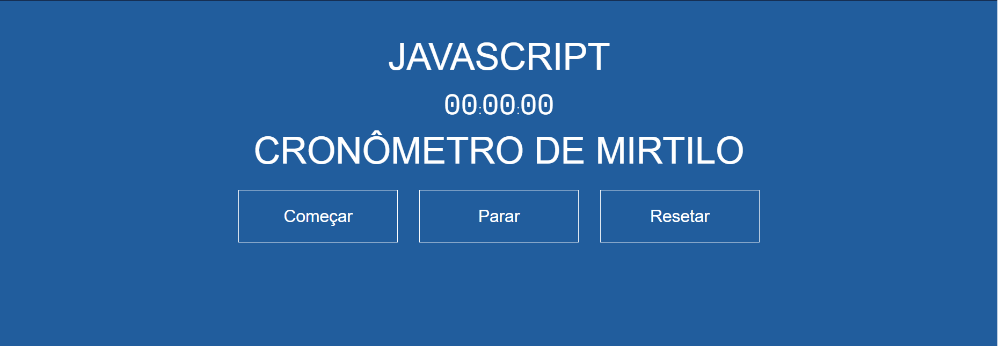

2 de novembro 2022
Cronômetro em JavaScript

eu aprendi a criar um cronômetro interativo em JavaScript, HTML e CSS, com um design responsivo. Você pode iniciar, pausar e reiniciar o cronômetro, que exibe o tempo em formato de horas, minutos, segundos e centésimos de segundo. Essa experiência me proporcionou conhecimentos sobre manipulação de elementos HTML, estilização com CSS e lógica de programação em JavaScript.